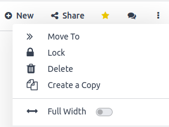
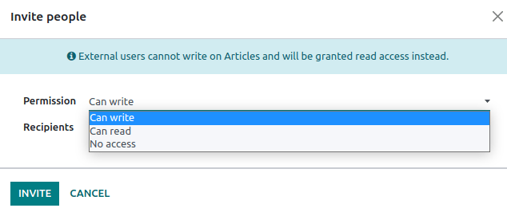

Gestión de artículos¶
Gestionar artículos de forma efectiva es esencial para maximizar el valor de sus recursos informativos, ya sea que necesite trabajar en un proyecto de investigación, estudiar para un examen o construir una base de datos de información para su negocio. La aplicación Información le permite gestionar sus artículos por completo, desde crearlos y eliminarlos, también podrá compartirlos y estructurarlos.
La mayoría de las herramientas para gestionar sus artículos están disponibles al hacer clic en el botón con tres puntos verticales (⋮) en el lado derecho de la barra superior. Desde allí, puede mover, bloquear, eliminar o duplicar un artículo.
Crear, compartir y eliminar artículos¶
Crear¶
Para crear artículos, haga clic en el botón + Nuevo en el lado derecho de la barra superior. También puede hacer clic en el botón + junto a una categoría u otro artículo.
Truco
Cree artículos privados con mayor rapidez al presionar las teclas Alt (u Opción) + C.
Invitar usuarios¶
Para compartir artículos con usuarios específicos (internos o externos, como contactos o clientes), haga clic en Invitar. Esto desplegará una ventana emergente en la que puede elegir el permiso (es decir, los permisos de acceso) y escribir el nombre o el correo electrónico de los destinatarios.
También puede restringir el acceso de un usuario específico al artículo, para esto debe seleccionar el permiso Sin acceso.
Compartir en línea¶
Para compartir artículos en línea debe activar el botón Compartir en la web. Al hacer esto, se generará un enlace URL que cualquier persona puede usar para visualizar el artículo.
Además, el menú «compartir» muestra los permisos predeterminados de los miembros internos y de otros usuarios a los que otorgó un permiso específico.

Eliminar¶
Para retirar un artículo, puede eliminarlo o archivarlo.
Para eliminar un artículo, ábralo y haga clic en el botón con los tres verticales . El artículo se mueve a la papelera durante 30 días antes de que se elimine de forma permanente. Para restaurarlo, haga clic en Abrir la papelera, seleccione el artículo y luego presione Restaurar.
Para archivar artículos, haga clic en Buscar, seleccione los artículos y haga clic en , estos no aparecerán en el menú de búsqueda. Para visualizarlos, agregue un filtro personalizado (, establezca Activo como es No), después seleccione los artículos y seleccione .
Estructura de los artículos¶
Los artículos se organizan en una estructura jerárquica. El artículo de arriba es el artículo principal y los de abajo son los artículos anidados, esta estructura permite agrupar artículos relacionados.
Para establecer esta jerarquía, cree nuevos artículos. Haga clic en el botón + junto al artículo que designará como principal. También puede mover los artículos existentes, arrástrelos y suéltelos debajo del futuro artículo principal o haga clic en el botón con tres puntos verticales (⋮), después haga clic en Mover a en la caja de herramientas y seleccione el artículo que será el principal.
Categorías¶
Además, los artículos están divididos en cuatro categorías disponibles en la barra lateral izquierda. Estas categorías otorgan permisos de acceso predeterminados a los artículos.
Favoritos: mientras tenga acceso a un artículo, puede marcarlo como favorito. Haga clic en el icono en forma de estrella (★) que se encuentra en el menú superior derecho del artículo. Cuando un usuario marca un artículo como favorito, solo aparece en esta sección para esta persona, no para otros usuarios.
Espacio de trabajo: los artículos que aparecen en esta categoría están disponibles para todos los usuarios internos y tienen permiso para leer, editar o compartir estos artículos.
Compartidos: los artículos que aparecen en esta categoría son los que compartió con usuarios internos o externos, así como aquellos que compartieron con usted.
Privado: los artículos que aparecen en esa categoría solo están disponibles para usted.